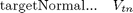
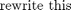

blasting_posesel
Description: based on streamOnto - specially made for blasting given a start q it will try and plast a point pt in space within an angle to the normal to the plane. It will try and minimise the distance between where the blast hits the plane and the center of the given plane. It may use various start positions if not using quick version Returns the joint coordinates corresponding to the end-effector at pt Note that the inverse kinematic solution is generally not unique, and depends on the initial guess Q (which defaults to 0). Also returns whether solution is valid and which method used and the dist_val to the required tr
Contents
- Function Call
- Variables
- Do the least squared optimisation function using q passed in
- Check the optimisation results, change start to all Zeros if necessary
- If quickver we are only doing the quick version
- Extended find (2 extra starting qs)
- EMBEDDED FUNCTION: Run iteratively changing delta q (dq)
- Error Vector (being minimised) in embedded cost calc function
- FUNCTION: checks pose validity, if valid but dist>min, return distance
Function Call
Inputs:
robot (structure) This holds the robot object
pt (1*3 double) cartitian point where we want end effector br
targetNormal (1*3 double) the desired target normal at the point
q (1*6 double) radians - The joint config starting guess
quickver (binary) Whether to try more than q and all 0 for start joint configs. Possibly Less acurate but quicker
Returns:
qt (1*6 double) radians - The recommended joint config
solutionvalid (binary) whether the returned qt gives a valid solution within optimisation parameters
used_sol (1->4 int) which solution for starting q was used
targetdist (structure) 2 values, (1)Distance between end effector and plane, (2) Distance between end effector (nozzel) and pt
dist_val (double) Distance between where the plane is hit with blast stream and pt
function [qt,solutionvalid,dist_val,targetdist,used_sol] = blasting_posesel(robot, pt, plane_equ, q, quickver) % load pointcloud % pointsindex=find(points(:,1)>-0.2 & points(:,1)<0.2 & points(:,2)>-0.2 & points(:,2)<0.2); % points=points(pointsindex,:); % surface_making_simple(points,0.04); % global plane
Variables

global optimise densoobj workspace r; %default is true, unless proven otherwise solutionvalid=true; if size(pt, 1) == 1 pt = pt(:); % make sure pt is a column vector end % make sure targetNormal is a column vector (unit) targetNormal = plane_equ(1:3)/ norm(plane_equ(1:3)); targetNormal=targetNormal(:); numlinks = robot.n; Links = robot.link; t = robot.base; qlimits=robot.qlim; %make sure the q is correct if nargin < 3 q = zeros(numlinks, 1); else q = q(:); end %only use the first 5 joints since the 6th makes no difference q=q(1:5); q_input=q; %save the input q (or made up q) for later options = optimset('Display', 'off', 'Largescale', 'off', 'TolFun', optimise.stol,'MaxFunEvals', optimise.iLimit,'DiffMinChange',optimise.jointresolution); xGuess = zeros(size(q));lb = []; ub = [];
Do the least squared optimisation function using q passed in
[dq] = lsqnonlin(@costComponents, xGuess, lb, ub, options);
% Update the configuration
qt = [q + dq;0]; all_qts(1).val=qt;
%if there is a collision or out of joint limit then no distance is returned
dist=[inf,inf,inf,inf];
Check the optimisation results, change start to all Zeros if necessary
[valid,dist(1),targetdist(1).val]=check_newQ(qt,qlimits,pt,t,Links,numlinks,plane_equ);
if valid; used_sol=1; dist_val= dist(1); qt=qt'; return;
else
%check if current q =0, otherwise try getting a solution with q=0
if ~isempty(find(q(1:3)~=0, 1))
q = zeros(numlinks-1, 1);
[dq] = lsqnonlin(@costComponents, xGuess, lb, ub, options);
qt = [q + dq;0]; all_qts(2).val=qt;
[valid,dist(2),targetdist(2).val]=check_newQ(qt,qlimits,pt,t,Links,numlinks,plane_equ);
if valid; used_sol=2; dist_val= dist(2); qt=qt'; return; end
end
If quickver we are only doing the quick version
%only using 1/2 num of starts so quit here even if no result found if quickver [dist_val,used_sol]=min(dist); if dist_val==inf; solutionvalid=false; used_sol=0; qt=qt';return; else qt=all_qts(used_sol).val; solutionvalid=-1; qt=qt';return; end; end
Extended find (2 extra starting qs)
%Try a guess which starts at 90' off the current Q, this might find a solution q=q_input+((sqrt(q_input.^2)~=q_input)*2-1)*pi; [dq] = lsqnonlin(@costComponents, xGuess, lb, ub, options); qt = [q + dq;0]; all_qts(3).val=qt; [valid,dist(3),targetdist(3).val]=check_newQ(qt,qlimits,pt,t,Links,numlinks,plane_equ); if valid; used_sol=3; dist_val= dist(3); qt=qt'; return; end %Try randomly guessing a starting point q=[0;0;0;0;0]; for i=1:size(qlimits,1)-1; q(i)=rand()*(-qlimits(i,1)+qlimits(i,2))+qlimits(i,1); end [dq] = lsqnonlin(@costComponents, xGuess, lb, ub, options); qt = [q + dq;0]; all_qts(4).val=qt; [valid,dist(4),targetdist(4).val]=check_newQ(qt,qlimits,pt,t,Links,numlinks,plane_equ); if valid; used_sol=4; dist_val= dist(4); qt=qt'; return; end [dist_val,used_sol]=min(dist); if dist_val==inf %if we haven't left the function yet then the solution is not valid solutionvalid=false; used_sol=0; qt=qt';return; else qt=all_qts(used_sol).val; solutionvalid=-1; qt=qt';return; end end
EMBEDDED FUNCTION: Run iteratively changing delta q (dq)

% \end{arrary}$$ function [e]=costComponents(dq) tr=t; q_temp=[q+dq;0]; % q_temp=q+dq; Jlimitresult=[0,0,0,0,0,0]; result_row=[1,1,1,1,1,1]; %check each joint and link for collisions and exceeding limits for i=1:numlinks; tr = tr * Links{i}(q_temp(i)); if q_temp(i)<qlimits(i,1); Jlimitresult(i)=qlimits(i,1)-q_temp(i); elseif q_temp(i)>qlimits(i,2); Jlimitresult(i)=q_temp(i)-qlimits(i,2); end if i>2 tempresult=check_FF(tr,densoobj(i+1).ellipse,workspace.indexedobsticles); result_row(i)=tempresult; if tempresult~=1 % keyboard end end end
Error Vector (being minimised) in embedded cost calc function
$$e=\left( \begin{array}{c} e^{4( \sqrt{(P_{dt,x}-P_{at,x})^2+(P_{dt,y}-P_{at,y})^2+(P_{dt,z}-P_{at,z})^2}-C_{maxtargetdis})}\\ e^{4( \sqrt{(P_{z,x}-P_{az,x})^2+(P_{z,y}-P_{az,y})^2+(P_{z,z}-P_{az,z})^2}-C_{maxtargetdis})}\\ e^{10( dist_pt2tr(pt,tr)-C_{minAccepDis})}\\ \frac{e^{5( Q_{5th}-C_{maxDeflectionError})}}{100}\\ e^{5\times \sum{Jlimitresult}}-1\\ e^{5(6-\sum{result\_row}}-1\\ \end{array} \right)$$ stream length should be distance to actual point of intersection
disttotarget=dist_pt2tr(pt,tr); theta = acos(plane_equ(1:3)*unit((tr(1:3,3)+tr(1:3,4)))); % theta=acos(dot(targetNormal,unit(tr(1:3,3)+tr(1:3,4)))); % theta*180/pi % plot(r,q_temp','joints');hold on; plot3(pt(1),pt(2),pt(3),'r*') % drawnow % streamStart=tr(1:3,4); % streamEnd=tr(1:3,3)'+tr(1:3,4)'; % r_var=[streamStart(1)-streamEnd(1),streamStart(2)-streamEnd(2),streamStart(3)-streamEnd(3)]; r_var=-tr(1:3,3)'; %find intersection point between surface and the scan line between scan origin and point bottomof_t_var=plane_equ(1)*r_var(1)+... plane_equ(2)*r_var(2)+... plane_equ(3)*r_var(3); %make sure it is not 0 otherwise change it so it is simply a very small %number (epsilon) if ~isempty(find(bottomof_t_var==0, 1)); bottomof_t_var=eps; end t_var=( plane_equ(1)*tr(1,4)+... plane_equ(2)*tr(2,4)+... plane_equ(3)*tr(3,4)+... plane_equ(4)... )./ bottomof_t_var; % Get the intersection points intersectionPNT=[t_var.*-r_var(1)+tr(1,4),... t_var.*-r_var(2)+tr(2,4),... t_var.*-r_var(3)+tr(3,4)]; streamlength=dist_pt2tr(intersectionPNT,tr); %determine distance from unit long stream length to intersectionPNT to make %sure that it is on the same side streamEnd=tr(1:3,3)'+tr(1:3,4)'; cor_orient_vec_streamlen=sqrt((intersectionPNT(1)-streamEnd(1))^2+... (intersectionPNT(2)-streamEnd(2))^2+... (intersectionPNT(3)-streamEnd(3))^2); % e = [exp(-5*(optimise.maxtargetdis-streamlength)); % exp(-10*(streamlength-optimise.mintargetdis)); % exp(10*(sqrt((pt(1)-intersectionPNT(1))^2+... % (pt(2)-intersectionPNT(2))^2+... % (pt(3)-intersectionPNT(3))^2)-optimise.minAccepDis)); % exp(5*(theta-optimise.maxDeflectionError)); % exp(5*sum(Jlimitresult))-1; % exp(5*(6-sum(result_row)))-1]; e = [exp(10*(disttotarget-optimise.maxtargetdis)); exp(10*(optimise.mintargetdis-disttotarget)); exp((streamlength-optimise.maxtargetdis)/10); exp((optimise.mintargetdis-streamlength)/10); exp((cor_orient_vec_streamlen-(1-optimise.mintargetdis))/5); exp((sqrt((pt(1)-intersectionPNT(1))^2+... (pt(2)-intersectionPNT(2))^2+... (pt(3)-intersectionPNT(3))^2)-optimise.minAccepDis)/10); exp(theta-optimise.maxDeflectionError); exp(5*sum(Jlimitresult))-1; exp(5*(6-sum(result_row)))-1]; end end
FUNCTION: checks pose validity, if valid but dist>min, return distance
function [valid,dist,targetdist]=check_newQ(qt,qlimits,pt,tr,Links,numlinks,plane_equ) global optimise densoobj workspace; %returns infinite distance by default dist=inf; %distance from tr to target pt, distance from tr to target plane targetdist=[inf,inf]; %it is not valid by default so we can return at anytime and return invalid valid=false; %from base transform of the robot check each joint and fkine through for i=1:numlinks; tr = tr * Links{i}(qt(i)); if qt(i)<qlimits(i,1) || qt(i)>qlimits(i,2); return; end; if ~check_FF(tr,densoobj(i+1).ellipse,workspace.indexedobsticles); return; end; end % Check the actual distance from end effector to target point targetdist(1)=dist_pt2tr(pt,tr); streamStart=tr(1:3,4); % streamEnd=tr(1:3,3)'+tr(1:3,4)'; % r_var=[streamStart(1)-streamEnd(1),... % streamStart(2)-streamEnd(2),... % streamStart(3)-streamEnd(3)]; r_var=-tr(1:3,3); %find intersection point between surface and the scan line between scan origin and point bottomof_t_var=plane_equ(1)*r_var(1)+... plane_equ(2)*r_var(2)+... plane_equ(3)*r_var(3); %make sure it is not 0 otherwise change it so it is simply a very small %number (epsilon) if ~isempty(find(bottomof_t_var==0, 1)); bottomof_t_var(bottomof_t_var==0)=eps; end t_var=( plane_equ(1)*tr(1,4)+... plane_equ(2)*tr(2,4)+... plane_equ(3)*tr(3,4)+... plane_equ(4)... )./ bottomof_t_var; % Get the intersection points intersectionPNT=[t_var.*-r_var(1)+tr(1,4),... t_var.*-r_var(2)+tr(2,4),... t_var.*-r_var(3)+tr(3,4)]; targetdist(2)=dist_pt2tr(intersectionPNT,tr); %the distance on the plane between where we aimed and where it hit is dist=sqrt((pt(1)-intersectionPNT(1))^2+... (pt(2)-intersectionPNT(2))^2+... (pt(3)-intersectionPNT(3))^2); %angle between line and plane theta = acos(plane_equ(1:3)*unit((tr(1:3,3)+tr(1:3,4)))); %if it is allowable then it is valid and change this to return if targetdist(2)<optimise.mintargetdis||... targetdist(2)>optimise.maxtargetdis||... dist>optimise.minAccepDis ||... theta>optimise.maxDeflectionError display('Didnt find perfect solution but may still be good enough'); display(['values: dist= ',num2str(dist),' targetdist(2) = ',num2str(targetdist(2)),' theta(deg)= ',num2str(theta*180/pi)]) return; else %if we get to here it is valid valid=true; display('Found a solution'); display(['values: dist= ',num2str(dist),' targetdist(2) = ',num2str(targetdist(2)),' theta(deg)= ',num2str(theta*180/pi)]) end; end